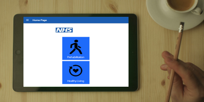

Welcome To The Support Page For Upper-Gastrointestinal Patients
This is a website that has been created on behalf of the University Hospitals of North Midlands, to give you helpful advice and useful information on how to stay fit and healthy before your upper-gastrointestinal operation. We also have an app called NHS UGI Surgery Support that can be useful to help you prepare for your surgery.
Do you want to improve your daily lifestyle routine, get healthier, and be prepared for surgery?
Don't worry,we have an app that can help you to improve yourself, by giving you helpful and useful information and advice to revamp your healthy living lifestyle.It aims to make you fitter and healthier, and get you in the best physical condition to cope with the effect surgery will have on your bodysurgery